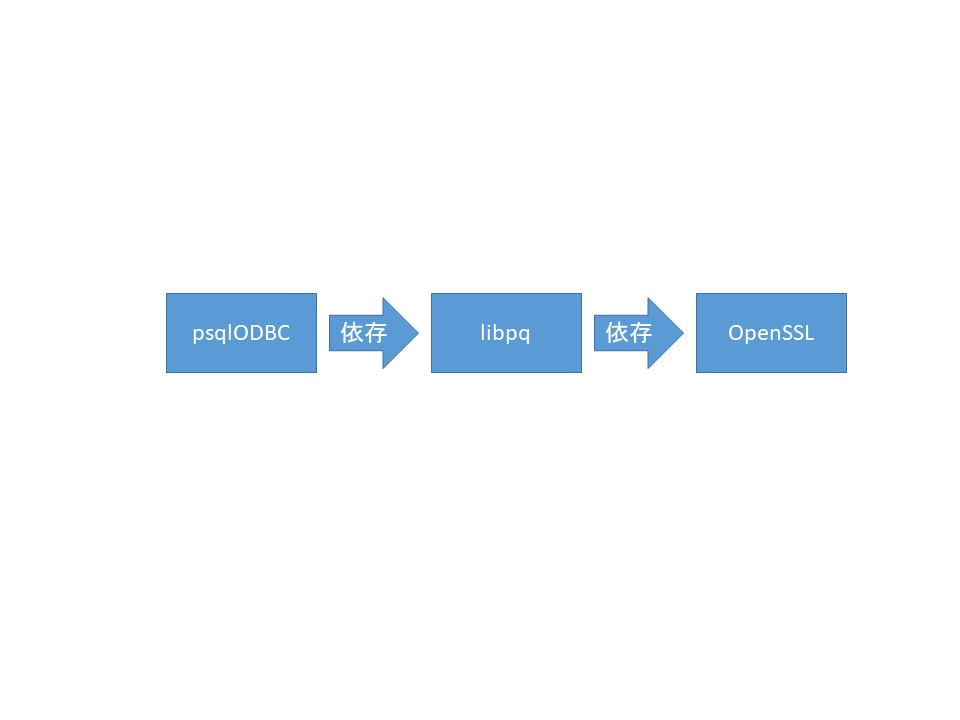
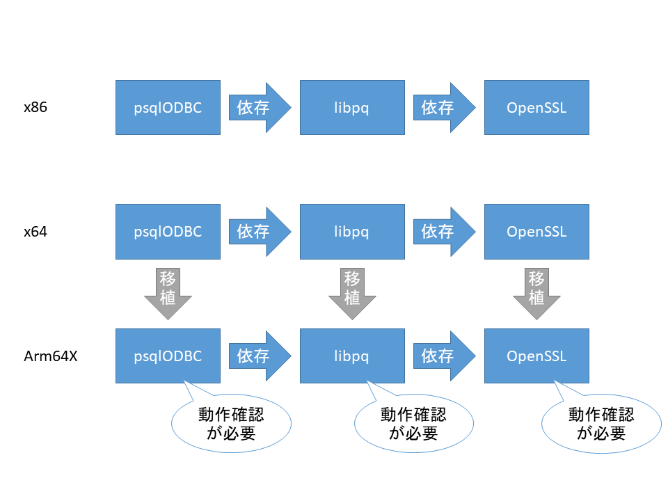
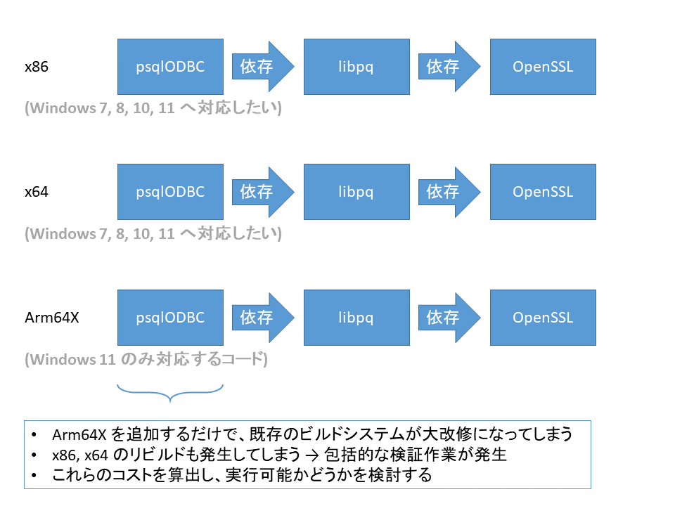

開発部の課題
Arm64 / Arm64X 対応方針の案について
配布しようとするソフトウェアのタイプによって案は異なって参ります
Arm64X とは
Arm64X とは Arm64 バイナリー (EXE, DLL) の事です。
Arm64 に加えて Arm64EC (Arm 版 Windows 11 専用の x64 用バイナリー) も併せて搭載したものを Arm64X と称します。
Arm64 と Arm64X
大体の場合は Arm64 バイナリー (EXE, DLL) を用意すれば充分ですが、どういった場合に Arm64X バイナリー (DLL) が必要になるのでしょうか。
Arm64 バイナリー (EXE) で充分な場合
実行アプリ (EXE) を提供する場合
Arm64 バイナリー (DLL) で充分な場合
Arm64 バイナリー (EXE) との接続を前提としている場合
アプリ側にて、ネイティブ DLL (x86, x64, Arm64 など) のフォルダー分けが可能な場合
.NET + NuGet のように ランタイム識別子 を利用することで、フォルダー分けを実現している場合。例:
runtimes\win-x86\nativeruntimes\win-x64\nativeruntimes\win-arm64\native
Arm64X バイナリー (DLL) が必要な場合
つぎの両方からの利用が想定される場合
Arm64 アプリ (EXE)
x64 アプリ (EXE)
例
プリンタードライバーを提供する場合
IME & TSF を提供する場合
ODBC ドライバーを提供する場合
ActiveX コントロールを提供する場合
COM コンポーネントを提供する場合
Arm64X の使い所
Arm64 対応の OS は 2 種類あります:
Arm 版 Windows 10
Arm 版 Windows 11
Arm64X バイナリーは実質的に Arm64 バイナリーとして機能できます。
Arm64X バイナリーの最適な配布先の分類は Arm 版 Windows という事になります。
※ 昔の Surface RT の Arm 版 Windows 8 は対象外です…
Arm64EC の落とし穴
Arm64EC
Arm64EC とは x64 バイナリー (exe, dll) の事です。
但し Arm 版 Windows 11 でしか動作しません。
ARM 上の ARM64EC for Windows 11 アプリ | Microsoft Learn
Arm64EC は、Windows 11 の Arm デバイスで実行されているアプリ用の新しいアプリケーション バイナリ インターフェイス (ABI) です。 Windows 11 SDK を使用する必要がある Windows 11 機能であり、Arm 上の Windows 10 では使用できません。
問題点は、つぎの通りです:
Arm64EC のアプリを配布して Windows 10 で実行しようとした
→ c0000005 エラーにより起動しない
→ Arm64EC バイナリを Windows 10 向けに配布してはいけない!
Arm64EC のアプリを配布して x64 版 Windows 11 で実行しようとした
→ c0000005 エラーにより起動しない
→ Arm64EC バイナリを x64 版 Windows 11 向けに配布してはいけない!
Arm64 バイナリーではダメなのか (Arm64X が必要な理由)
例えば ODBC ドライバーで困る事例があります。
psqlODBC が Arm64 対応の場合:
ODBC データソースの設定 (Arm64)とpsqlODBC (Arm64)との組み合わせ → 問題なしMicrosoft Access (Arm64EC (x64))とpsqlODBC (Arm64)との組み合わせ → psqlODBC はロードできない
psqlODBC が Arm64X 対応の場合:
ODBC データソースの設定 (Arm64)とpsqlODBC (Arm64X)との組み合わせ → 問題なしMicrosoft Access (Arm64EC (x64))とpsqlODBC (Arm64X)との組み合わせ → 問題なし
Arm64X バイナリーの判別方法について
手元にあるバイナリーファイルが Arm64X 対応かどうか、容易に判別する方法が、実はありません。
そこで、ファイルタイプの判別を可能にする Web アプリケーションを作成しました (Visual Studio 2022 や .NET や WebAssembly などを利用して開発)
オンラインデモはこちら:
GitHub レポジトリーはこちら:
コマンドラインアプリの方が合目的であれば、こちらです:
psqlODBC を実際に Arm64 環境で使用してみる
有名な RDBMS として PostgreSQL があります。 これに対応する ODBC ドライバーとしては psqlODBC というソフトウェアがあり、 Windows 向けのバイナリーはつぎの配布先からダウンロード可能です。
執筆時点での最新版 REL-17_00_0006 では、つぎの 2 種類の MSI パッケージが存在します:
psqlodbc_x64.msipsqlodbc_x86.msi
一方で Arm64 対応の MSI パッケージは公式には存在していません。
そこで、研究がてら非公式にビルドをしたものを GitHub で配布しています:
各々のパッケージを使用した場合の成功事例と失敗事例を確認しましょう:
※ マシンは Azure の Arm64 対応の仮想マシンで検証しています。
Processor Cobalt 100 3.40 GHz
...
System type 64-bit operating system, ARM-based processor
mariadb-connector-odbc Arm64X 対応版
2025/07/26 現在、公式には Arm64 版の mariadb-connector-odbc は存在していないようです。
私がビルドしたものをこちらのサイトで配布しています (利用は評価目的での範囲内を推奨)
Arm64X バイナリーのビルド方法について
最新版の Visual Studio 2022 で Arm64X のバイナリーをビルドする方法が既に存在します。
Arm64X ファイルをビルドする | Microsoft Learn
Visual Studio 2022 の統合開発環境にて、プロジェクトの設定変更をする方法はリンク先の通りです。
一方で、より原始的な方法でビルドする場合はどのようになるのでしょうか。
具体的に見ていきましょう。
dllmain.obj から plugin.dll を生成する用事があるとすると、つぎのような流れになります:
dllmain.obj(Arm64 版) をビルドdllmain.obj(Arm64EC 版) をビルドリンク時に、両者を合体して
plugin.dllを生成
いかがでしょうか。
特に、依存関係にあるライブラリーが Visual Studio 2022 の外で開発されたものである場合は、 いかに大変な作業になるか… 想像できるのではないでしょうか。
例えば psqlODBC では PostgreSQL と OpenSSL への依存関係があります。
執筆時点では、いずれのソフトウェアについても、公式の Arm64X バイナリーは存在していません。
psqlODBC Arm64X 版の移植にあたっては、これらのビルドシステムを手修正し、自分でバイナリーをビルドする必要がありました。
OSS のビルドシステム
Visual Studio 2022 で完結するようなプロジェクトであれば、 ビルドオプションの調整で話が済むのでしょう。
一方で PostgreSQL (Meson) や OpenSSL など OSS のビルドシステムを採用しているプロジェクトでは、 そうは参りません。
PostgreSQL や OpenSSL など、Microsoft の OS と文化を発祥としない OSS については、 どのようにすれば包括的な対応ができるのでしょうか。
一般的な OSS のビルドシステムでは、例のような dllmain.obj は、単一でなければならない、という前提があるはずです。
dllmain.obj が 2 つ以上発生するようなプラットフォームに対して、
容易に対応できるような設計になっていない。
これが Arm64X 対応を語るうえでの、主な問題の 1 つです。
問題点の認識状況
この問題とその対応策について Microsoft の Developer Community へ提起はしたのですが、未だに Microsoft 側の具体的なアクションは見られません:
私が提案した事項はつぎの通りです:
The problem is that the existing OSS build systems (like meson and OpenSSL build engine) do not expect to invoke the compiler 2 times.
Is it able to achieve the following ideas?
Build both ARM64 COFF and ARM64EC COFF with one CL.exe usage with a special command line option like
/arm64x.Develop a new container purpose COFF format and magic, to include ARM64 and ARM64EC COFF images in one obj file.
pseudo-ARM64X COFF (仮) の提案と実装
.obj ファイルが 2 つ発生してしまう。
これを回避するために、両方 (Arm64 & Arm64EC) の .obj を格納できる、コンテナ目的の .obj 形式 (pseudo-ARM64X COFF) を定義してしまう、という考え方です。
Meson などのビルドシステムではクロスコンパイルをサポートしています。
Arm64X という架空のターゲットを定義して、そのクロスコンパイル環境を実装し、問題解決しようとするアイデアです。
COFF (pseudo-ARM64X COFF)
マジック値が
0x014CでありAA64.objとA641.objとの 2 セクションのみを持つ.objファイル
CL (Arm64XDualObjCL)
これは Visual Studio の CL.exe を使用し、かつ pseudo-ARM64X COFF を入出力できるようにラップしたもの
LIB (Arm64XDualObjLIB)
これは Visual Studio の LIB.exe を使用し、かつ pseudo-ARM64X COFF を入力し、かつ Arm64X .lib (Arm64 COFF + Arm64EC COFF の両方を含む単一の
.lib) を出力できるようにラップしたもの
LINK (Arm64XDualObjLINK)
これは Visual Studio の LINK.exe を使用し、かつ pseudo-ARM64X COFF と Arm64X .lib を入力し、かつ Arm64X バイナリーを生成できるようにラップしたもの
.NET 8.0 を使用した見本実装を用意しています: psqlodbc-for-win10-arm64/Toolings
偏りのある対応 OS
Arm64X DLL が実行されうる実行環境は 3 つあります:
Arm 版 Windows 10 上の Arm64 アプリからのロード
Arm 版 Windows 11 上の Arm64 アプリからのロード
Arm 版 Windows 11 上の x64 アプリからのロード
Arm 版 Windows 10 がプレインストールされた PC を合法的に入手する方法は、あるのでしょうか。
無いかもしれません。
つまるところ Arm 版 Windows 10 は検証機器が入手できないがために、サポート対象外にする必要があるかもしれません。
Arm 版 Windows 11 には 2 つの実行環境があります。
DLL を提供する場合は、検証に際して、どのようなアプリをベースに動作確認をするのか、検討しましょう。
Microsoft Office の場合は x64 または Arm64EC 版しか存在しません。 Arm64 版のワードプロセッサーや表計算ソフトを用意する必要性についても検討しましょう。
依存関係の洗い出し
Arm64X 対応にあたり、依存関係にあるライブラリの把握をしましょう。 一部は OSS であったり、 一部は商用ソフトウェアであったりすると思います。
レガシーコードと最新のコンパイラー
レガシーコードと最新のコンパイラーは相性がよくない場合があります。
特に、古いコードベースについては、最新のコンパイラでビルドをすると、エラーを吐き出す場合があります。 この場合、コードの修正と場合によってはリファクタリングが必要になります。
コードを修正するという事は 「修正後のコードにバグが無いという事を確実にするために、追加の検証作業が必要になる」 という点にも留意しましょう。
Arm64X バイナリーをビルドするためには Visual Studio 2022 バージョン 17.3 以降 (2025/01/22 頃、公開) が必要です。
Windows 11 との互換性
Arm64EC は Windows 11 専用バイナリーという点から Windows 11 で動作するコード が必要です。
場合によっては、コードのブラッシュアップも必要になるでしょう。
公式ドキュメントを参照するなどして、互換性が確保されている事を確認しましょう:
ビルドシステムの改修とコストの問題
x86 & x64 のビルドシステムへ Arm64X を追加する場合に、相当なコスト (人件費) が発生する可能性があります。
主には、実際の移植作業と、ビルドされた全バイナリーの検証作業です。
psqlODBC のように対象のプロジェクトが 1 つであれば充分な手間暇を掛けられますが…
それがプリンターメーカーのドライバーのように 100 種類近くもあると、どうでしょうか。 あるいは、退職者が開発したプログラムに依存していて手入れが必要になるなど、 予期しない時間コストの追加も考慮しなければなりません。
サポート期間内の全てのプリンターの電源を入れて、 順番に少なくとも 3 パターン (x86, x64, Arm64X) ずつ、 基本機能のテストをしていき、 なおかつ問題点の修正をしては カンペキな状態へと仕上げていく。 現実的に可能なのでしょうか…
セットアップの構築案
普段より私は NSIS (Nullsoft Scriptable Install System) を使用しています。 スクリプトベースで検討すると、いくつかの方法論が浮かび上がってきます。
また EXE を配布する場合と DLL を配布する場合とで、考え方が異なります。